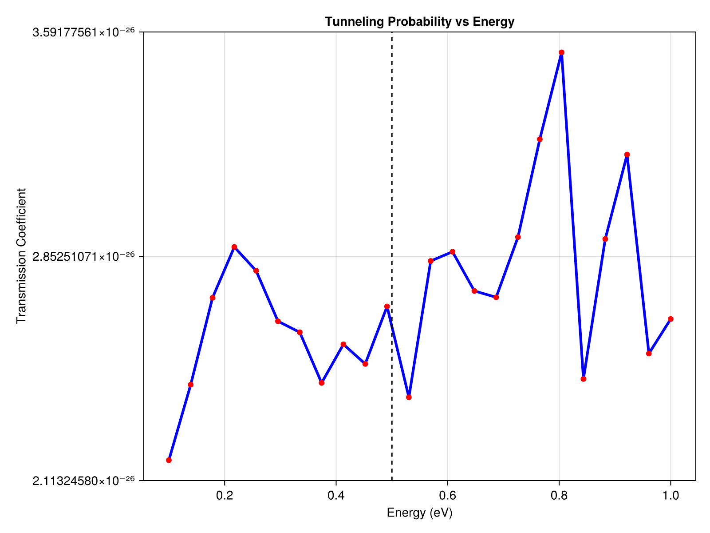

Parallel Parameter Sweep
In quantum mechanics, we often need to calculate probabilities over a range of parameters (like computing the transmission probability of a particle across different incident energies).
Because these simulations are completely independent, SchroedingerEquation.jl natively supports multi-threading out-of-the-box using Julia's @threads macro!
Setup
We set up a barrier with a width of 2.0 nm and a height of 0.5 eV. We will sweep over incident particle energies from 0.1 eV to 1.0 eV.
using SchroedingerEquation
using Unitful
using Base.Threads
using LinearAlgebra
# 1. Setup Common Basis
basis = RealSpaceGrid1D(-50.0u"nm", 50.0u"nm", 2000)
# 2. Define the Barrier
barrier_width = 2.0u"nm"
barrier_height = 0.5u"eV"
potential = SquareWellPotential(barrier_width, -barrier_height; x0=0.0u"nm")
# 3. Parameter Sweep: Incident Energies
energies = range(0.1, 1.0, length=24)u"eV"
results = zeros(length(energies))
println("Starting parallel sweep on ", nthreads(), " threads...")The Multi-threaded Loop
By wrapping our for loop in @threads, Julia automatically distributes the workload across the available CPU cores.
Inside the loop, we use the SSFMWorkspace to pre-allocate memory and call the ultra-fast propagate_ssfm solver. Because each thread uses its own local workspace, this approach is perfectly thread-safe and extremely fast.
@threads for i in 1:length(energies)
E = energies[i]
# Setup initial wavepacket with energy E
m = 1.0u"me"
hbar = 1.0u"hbar"
p0 = sqrt(2 * m * E)
x0 = -20.0u"nm"
sigma = 2.0u"nm"
psi_vals = [exp(-(x - strip_units(x0))^2 / (2 * strip_units(sigma)^2)) * exp(im * strip_units(p0) * x) for x in basis.x]
psi0 = Wavefunction1D(ComplexF64.(psi_vals), basis)
normalize!(psi0)
dt = 0.05u"fs"
t_total = 100.0u"fs"
# We create a local workspace for this thread
ws = SSFMWorkspace(psi0, potential, dt; m=m, hbar=hbar)
# Propagate (don't keep history to save memory)
history = propagate_ssfm(psi0, potential, t_total, dt;
workspace=ws, m=m, hbar=hbar, keep_history=true)
# Calculate Transmission: Fraction of norm on the right side (x > 5.0nm)
final_psi = history[end].psi
transmission = sum(abs2, final_psi[basis.x .> strip_units(5.0u"nm")]) * basis.dx
results[i] = transmission
println("Thread $(threadid()): Finished E = $E, T = $(round(transmission, digits=3))")
endVisualization
Once all threads have finished, we plot the transmission probabilities.
# 4. Visualization of Results
using CairoMakie
fig = Figure(size=(800, 600))
ax = Axis(fig[1, 1], title="Tunneling Probability vs Energy",
xlabel="Energy (eV)", ylabel="Transmission Coefficient")
lines!(ax, ustrip.(energies), results, color=:blue, linewidth=3)
scatter!(ax, ustrip.(energies), results, color=:red)
# Add barrier height indicator
vlines!(ax, [ustrip(barrier_height)], color=:black, linestyle=:dash, label="Barrier Height")
save("examples/results/07_tunneling_sweep.png", fig)
println("Sweep complete. Results saved to examples/results/07_tunneling_sweep.png")Console Output:
Starting parallel sweep on 1 threads...
Thread 1: Finished E = 0.1 eV, T = 0.0
Thread 1: Finished E = 0.1391304347826087 eV, T = 0.0
...
Thread 1: Finished E = 0.9608695652173913 eV, T = 0.0
Thread 1: Finished E = 1.0 eV, T = 0.0
Sweep complete. Results saved to examples/results/07_tunneling_sweep.png(Note: The example above was run with a single thread locally, but to utilize multi-threading, simply start julia with julia -t auto!)
Resulting Plot:
